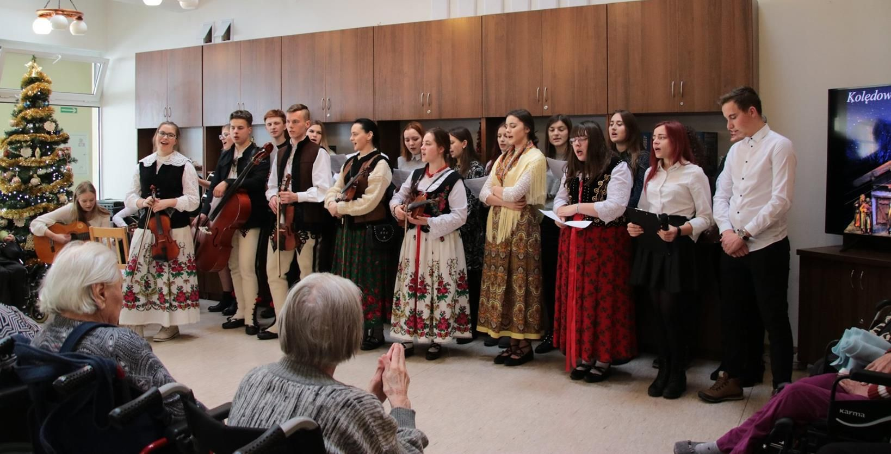
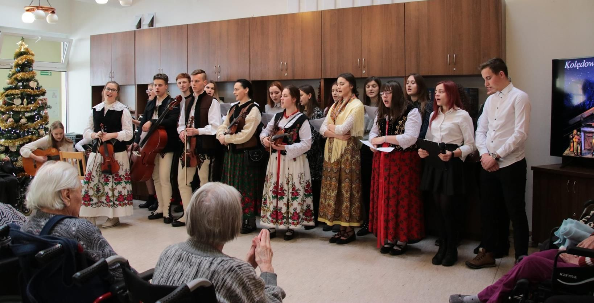

Szkolny Wolontariat Młodzieżowy
Od 2009 roku w naszym Liceum działa Szkolny Wolontariat Młodzieżowy, który stara się zachęcić młodzież do zwrócenia uwagi na innych, szczególnie
tych, którzy na różnych płaszczyznach potrzebują wsparcia, pomocy i zainteresowania. Przez te wszystkie lata w wolontariacie działało łącznie ponad 1000 uczniów - wolontariuszy,
którzy brali udział w różnych akcjach na terenie szkoły, miasta, powiatu, województwa, a także w skali ogólnopolskiej i światowej.
Założycielem formalnej grupy charytatywnej na terenie szkoły jest mgr Wojciech Grzybek – katecheta, przy wsparciu ks. Mariusza Dziuby obecnego proboszcza parafii Św. Krzyża w Zakopanem. Jednym z pierwszych zadań wolontariatu była Adopcja Misyjna na Odległość oraz spotkanie z pensjonariuszami w Domu Pomocy Społecznej w Zaskalu. W dalszych latach opiekunami SWM byli: ks. Ryszard Kilanowicz, mgr Joanna Frączek oraz ks. Daniel Tomczak. Obecnie są to nauczyciele: mgr Alicja Bryniarska, mgr Ewa Komperda, mgr Renata Kubaszek-Gelata, mgr Zofia Łukasz i mgr Wojciech Grzybek.

- Nowotarski Dzień Misyjnych dla szkół podstawowych i ponadpodstawowych
- Akcje: „Ciacho dla Marysi, Janka, Maćka, Karola, Pawła, Asi“
- Nowotarski Dzień Wolontariusza
- Świąteczna Zbiórka Żywności - Mikołajki dla Mukoludków
- Impreza charytatywna dla Maksyma i Marysi
- „Noworoczny Koncert Kolęd“- Dom Pomocy Społecznej w Zaskalu
- „Koncert Kolęd“ w Ośrodku Szkolno-Wychowawczym dla dzieci niewidzących i słabowidzących w Rabce
- Magiczny czas Świąt w Przytulisku Brata Alberta w Grywałdzie
- „Lekcja muzyki dla Chatki“
- Droga Krzyżowa w Zaskalu
- Koncert „Goszczyński dla Fundacji im. Adama Worwy“
- Spotkanie z Bajką dla dzieci w Rabce
- Turniej Gier Towarzyskich w Zaskalu
- Bieg po Oddech w Zakopanem

- Ogólnopolski Turniej: „Młoda krew ratuje życie“- II w 2015 r. i III miejsce w 2018 r.
- Akademicki projekt: „Magiczny czas Świąt Bożego Narodzenia“ w 2015 r.
Założycielem formalnej grupy charytatywnej na terenie szkoły jest mgr Wojciech Grzybek – katecheta, przy wsparciu ks. Mariusza Dziuby obecnego proboszcza parafii Św. Krzyża w Zakopanem. Jednym z pierwszych zadań wolontariatu była Adopcja Misyjna na Odległość oraz spotkanie z pensjonariuszami w Domu Pomocy Społecznej w Zaskalu. W dalszych latach opiekunami SWM byli: ks. Ryszard Kilanowicz, mgr Joanna Frączek oraz ks. Daniel Tomczak. Obecnie są to nauczyciele: mgr Alicja Bryniarska, mgr Ewa Komperda, mgr Renata Kubaszek-Gelata, mgr Zofia Łukasz i mgr Wojciech Grzybek.
Współpraca:
Dyrekcja Szkoły, Nauczyciele i Wychowawcy, Samorząd Szkolny, Parafia NSPJ w Nowym Targu, Dom Pomocy Społecznej w Zaskalu, Ośrodek Szkolno-Wychowawczy dla Dzieci i Młodzieży niewidzących i słabowidzących w Rabce-Zdrój, Małopolskie Hospicjum dla Dzieci i Młodzieży w Krakowie, Wydział Duszpasterstwa Misyjnego w Krakowie, Salezjański Wolontariat Misyjny „Młodzi Światu" w Krakowie, Fundacja im. Adama Worwy w Nowym Targu, Maltańska Służba Medyczna w Nowym Targu, Regionalne Centrum Krwiodawstwa i Krwiolecznictwa oddział w Nowym Targu, Klub Honorowych Dawców Krwi „Kropla" w Nowym Targu, Urząd Miasta w Nowym Targu, Miejski Ośrodek Kultury w Nowym Targu, Polskie Towarzystwo Walki z Mukowiscydozą oddział w Rabce-Zdrój, MOPS w Nowym Targu i inne instytucje.Działania:
- Akcja „Pola Nadziei“- Nowotarski Dzień Misyjnych dla szkół podstawowych i ponadpodstawowych
- Akcje: „Ciacho dla Marysi, Janka, Maćka, Karola, Pawła, Asi“
- Nowotarski Dzień Wolontariusza
- Świąteczna Zbiórka Żywności - Mikołajki dla Mukoludków
- Impreza charytatywna dla Maksyma i Marysi
- „Noworoczny Koncert Kolęd“- Dom Pomocy Społecznej w Zaskalu
- „Koncert Kolęd“ w Ośrodku Szkolno-Wychowawczym dla dzieci niewidzących i słabowidzących w Rabce
- Magiczny czas Świąt w Przytulisku Brata Alberta w Grywałdzie
- „Lekcja muzyki dla Chatki“
- Droga Krzyżowa w Zaskalu
- Koncert „Goszczyński dla Fundacji im. Adama Worwy“
- Spotkanie z Bajką dla dzieci w Rabce
- Turniej Gier Towarzyskich w Zaskalu
- Bieg po Oddech w Zakopanem

Projekty:
- Małopolski projekt: „Mieć Wyobraźnie Miłosierdzia“ – II miejsce w 2015 r.- Ogólnopolski Turniej: „Młoda krew ratuje życie“- II w 2015 r. i III miejsce w 2018 r.
- Akademicki projekt: „Magiczny czas Świąt Bożego Narodzenia“ w 2015 r.